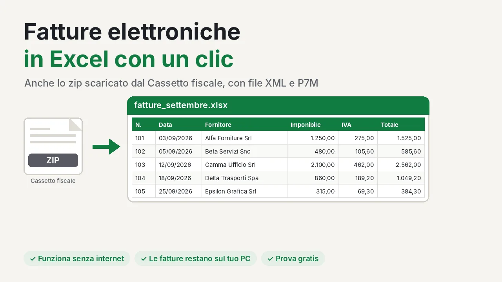
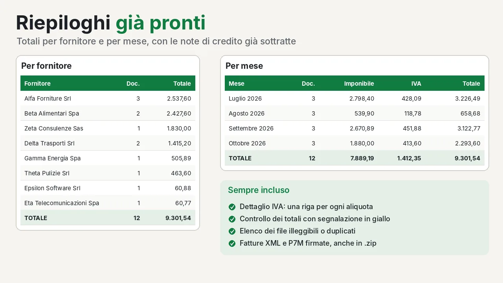
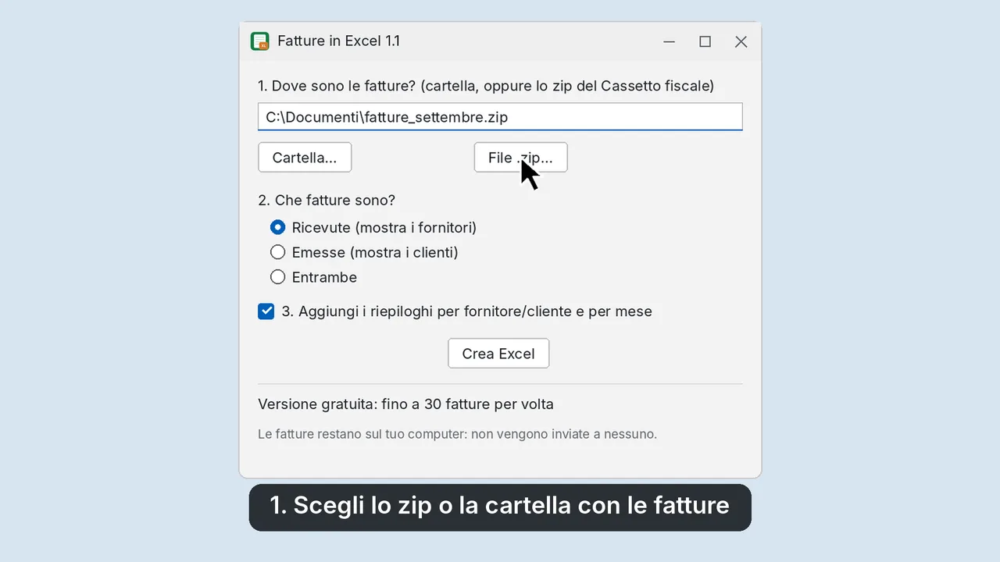

Fatture elettroniche
in Excel con un clic
Scegli lo zip o la cartella con le fatture XML e P7M, indica se sono ricevute o emesse, e ottieni un Excel ordinato. Anche con lo zip scaricato dal Cassetto fiscale.

Cosa ottieni
- Una riga per fattura: numero, data, fornitore o cliente, partita IVA, imponibile, IVA, totale
- Il dettaglio IVA per aliquota
- I riepiloghi per fornitore/cliente e per mese, con le note di credito sottratte
- Il controllo dei totali, con le differenze evidenziate in giallo
- L'elenco dei file illeggibili e dei doppioni
- Metadati e ricevute dello zip saltati automaticamente

Come funziona

- Scarica il programma: è un solo file, non serve installarlo.
- Scegli la cartella o il file zip con le fatture (.xml e .xml.p7m).
- Indica se sono fatture ricevute, emesse o entrambe e clicca Crea Excel.
Vuoi provarlo prima con dati inventati? Scarica le fatture di esempio (zip con file XML e P7M) e convertile.
Prezzo
Prova gratuita: fino a 30 fatture per volta. Licenza completa: 24 € + IVA, una volta sola, valida per sempre su un massimo di 3 computer. Se dopo l'acquisto il programma non legge le tue fatture, scrivi entro 14 giorni: proviamo a risolvere o ti rimborsiamo.
Domande frequenti
Le mie fatture vengono inviate da qualche parte?
No. Il programma lavora solo sul tuo computer. Internet serve una volta sola, per attivare la licenza: viene inviata a Gumroad solo la chiave di licenza.
Funziona con le fatture firmate (.p7m)?
Sì, legge direttamente i file .xml.p7m firmati digitalmente, senza programmi di firma.
Funziona con le fatture semplificate e le note di credito?
Sì. Le note di credito vengono sottratte nei riepiloghi.
Serve Microsoft Excel?
Serve un programma che apra i file .xlsx: Excel, LibreOffice o Google Fogli.
Funziona su Mac?
No, per ora solo Windows 10 e 11.